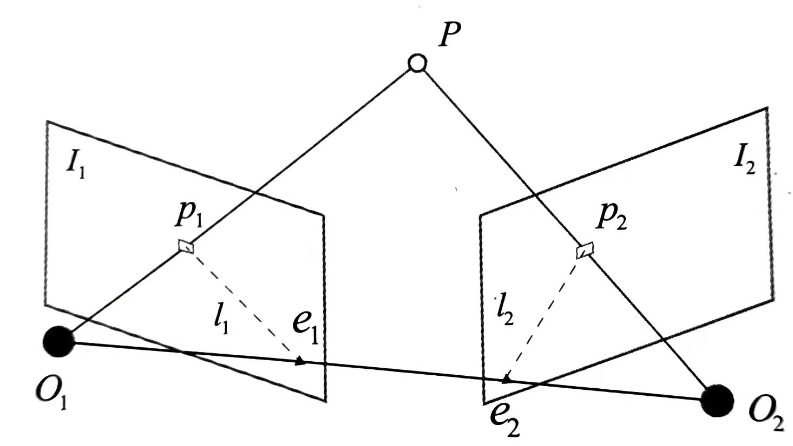
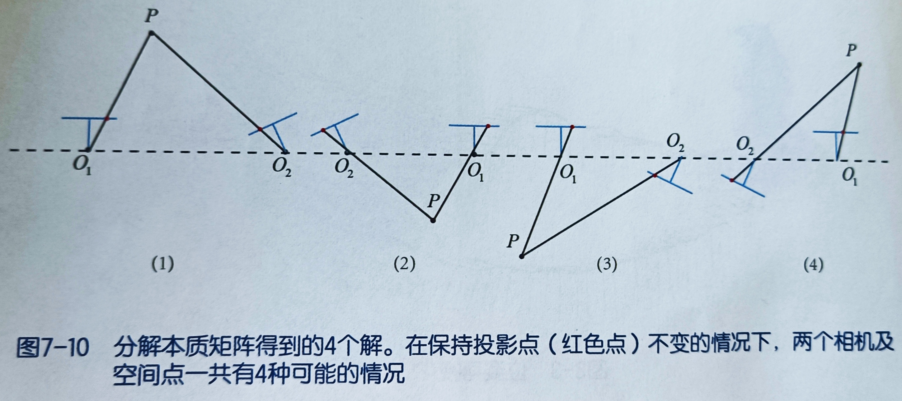
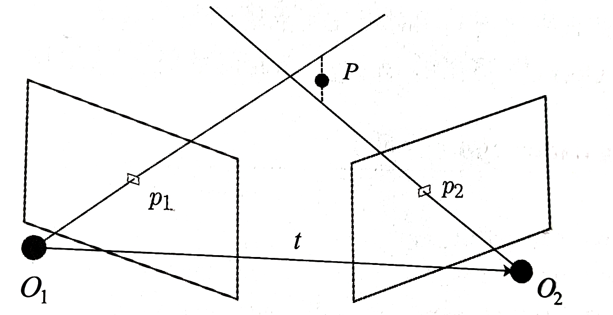
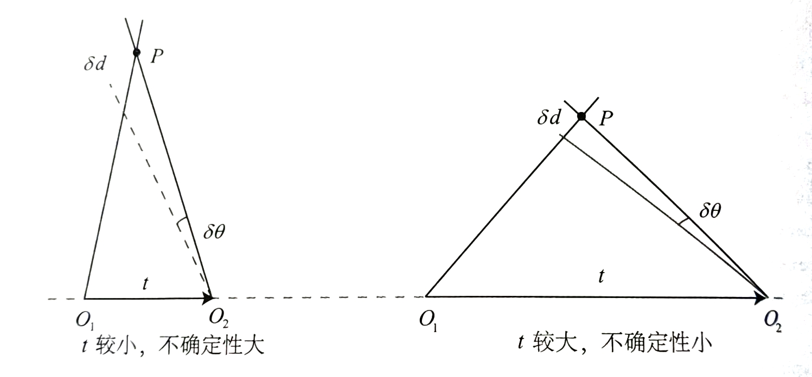
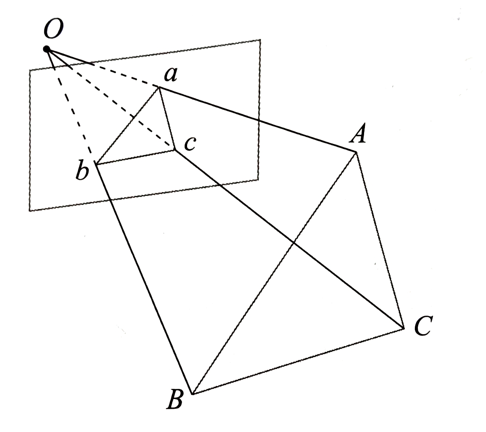
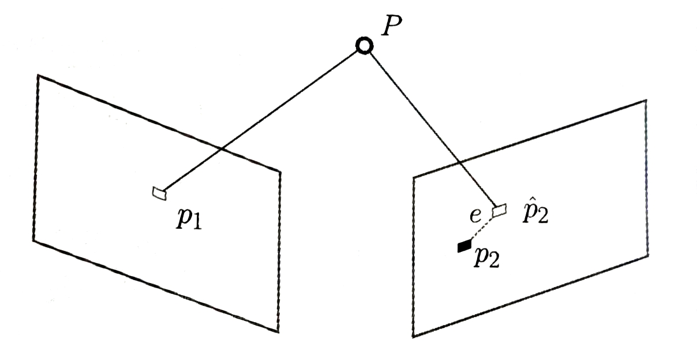
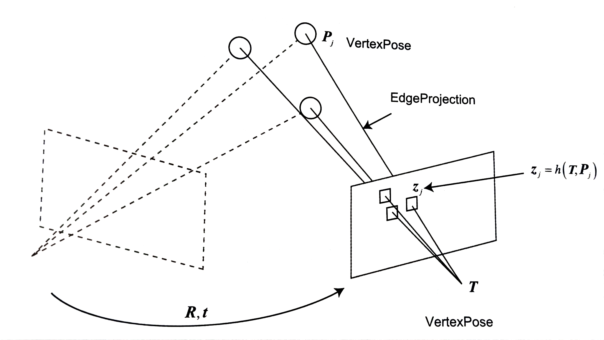
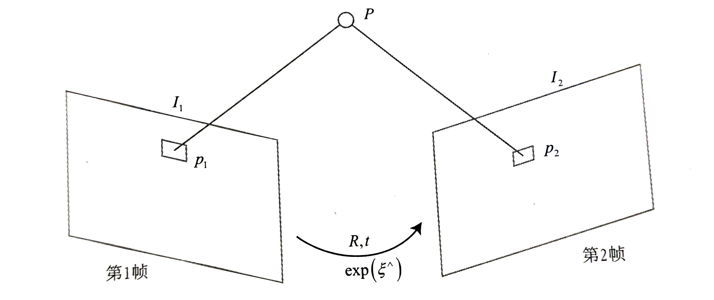

视觉里程计
视觉里程计根据相邻图像的信息估计出粗略的相机运动，给后端提供较好的初始值。视觉里程计的算法主要分为特征点法 和直接法 。
特征点法
特征点
首先从图像中选取比较有代表的点。这些点在相机视角发生少量变化后会保持不变，于是我们能在各个图像中找到相同的点。然后，在这些点的基础上，讨论相机位姿估计问题，以及这些点的定位问题。
很多算法中角点就是所谓的特征。角点的提取算法有\(\rm Harris\) 角点、\(\rm Fast\) 角点、\(\rm GFTT\) 角点等等。
考虑到某些角点当距离或旋转相机时可能失效，设计了更加稳定的局部图像特征，如\(\rm SIFT\) 、\(\rm SURF\) 、\(\rm ORB\) 等。相比于朴素的角点，这些人工设计的特征点有如下性质
可重复性\(\rm Repeatability\) ：相同的特征可以在不同的图像中找到
可区别性\(\rm Distinctiveness\) ：不同的特征有不同的表达
高效率\(\rm Efficiency\) ：同一图像中，特征点的数量应远小于像素的数量
本地\(\rm Locality\) ：特征仅与一小片图像区域相关
特征点由关键点 \(\rm Key-point\) 和描述子 \(\rm Descriptor\) 两部分组成。
关键点是指该特征点在图像里的位置，有些特征点还具有朝向、大小等信息
描述子通常是一个向量，按照某种人为设计的方式，描述了该关键点周围像素的信息
选择\(\rm ORB\) 特征进行分析，其它的特征可根据需要了解
ORB特征
\(\rm ORB\) 特征由关键字和描述子组成。关键点称为\(\rm Oriented \ FAST\) ，是一种改进的\(\rm FAST\) 角点。描述子称为\(\rm BRIEF\) 。提取\(\rm ORB\) 特征的步骤为
\(\rm FAST\) 角点提取：找出图像中的角点。相对于原版的\(\rm FAST\) ，\(\rm ORB\) 中计算了特征点的主方向，为后续的\(\rm BRIEF\) 描述子增加了旋转不变特性。\(\rm BRIEF\) 描述子：对前一步提取出特征点的周围图像区域进行描述。\(\rm ORB\) 对\(\rm BRIEF\) 进行了一些改进，主要是指在\(\rm BRIEF\) 中使用了先前计算的方向信息。
FAST关键点
\(\rm FAST\) 是一种角点， 主要检测局部像素灰度变化明显的地方，以速度快著称。它的思想是：如果一个像素与邻域的像素差别较大(过亮或过暗 )，那么它更可能是角点。相比于其他角点检测算法，\(\rm FAST\) 只需比较像素亮度的大小，十分快捷。它的检测过程如下
在图像中选取像素\(p\) ,假设它的亮度为\(I_p\)
设置一个阈值\(T\) (比如，\(I_p\) 的20%)
以像素\(p\) 为中心，选取半径为\(3\) 的圆上的\(16\) 个像素点
假如选取的圆上有连续 的\(N\) 个点的亮度大于\(I_p+T\) 或小于\(I_p-T\) ，那么像素\(p\) 可以被认为是特征点(\(N\) 通常取\(12\) 即\(\rm FAST-12\) 。其他常用的\(N\) 取值为\(9\) 和\(11\) 。它们分别被称为\(\rm FAST-9\) 和\(\rm FAST-11\)
循环以上四步，对每一个像素执行相同的操作
可以通过判断1，5，9，13四个点的像素亮度快速判断一个像素不是特征点，此外需要使用非极大值抑制来过滤特征点
由于\(\rm FAST\) 角点不具备方向信息。同时由于它固定去半径为\(3\) 的圆，存在尺度问题：远处看着像是角点的地方，接近后看可能就不是角点了。对此，\(\rm ORB\) 添加了尺度和旋转的描述。
质心是指以图像块灰度值作为权重的中心，操作如下
在一个小的图像块\(B\) 中，定义图像块的矩为
\[
m_{pq} = \sum_{x,y \in B}x^py^qI(x,y),\ \ \ \ \ \ \ p,q = \{0,1\}
\]
通过矩可以找到图像块的质心
\[
C = \bigg(\frac{m_{10}}{m_{00}},\frac{m_{01}}{m_{00}}\bigg)
\]
连接图像块的几何中心\(O\) 与质心\(C\) ，得到一个方向向量\(\vec{OC}\) ，于是特征点的方向可以定义为
\[
\theta = \arctan (m_{01}/m_{10})
\]
在\(\rm ORB\) 中，把这种改进后的\(\rm FAST\) 称为\(\rm Oriented \ FAST\)
BRIEF描述子
\(\rm BRIEF\) 是一种二进制描绘子，其描述向量由许多个\(0\) 和\(1\) 组成，这里的\(0\) 和\(1\) 编码了关键点附近两个随机像素（比如\(p\) 和\(q\) ）的大小关系：如果\(p\) 比\(q\) 大，则取\(1\) ，反之取\(0\) 。如果选取了128个这样的\(p,q\) ，就得到了128维由01组成的向量。此外，为了保持旋转不变性，需要对附近的坐标点进行旋转
\[
\begin{bmatrix} x^\prime \\ y^\prime \end{bmatrix} =
\begin{bmatrix} \cos \theta &-\sin \theta \\
\sin \theta &\cos \theta
\end{bmatrix}
\begin{bmatrix} x \\ y \end{bmatrix}
\]
特征匹配
特征匹配解决了$ \rm SLAM\(中的数据关联问题\) \rm data association$，即确定当前看到的路标与之前看到的路标之间的对应关系。
代码实现
//opencv API
Ptr < FeatureDetector > detector = ORB :: create (); //特征点检测器
Ptr < DescriptorExtractor > descriptor = ORB :: create (); //描述子
Ptr < DescriptorMatcher > matcher = DescriptorMatcher :: create ( "BruteForce-Hamming" ); //评价相似方式
detector -> detect ( img_1 , keypoints_1 ); //关键点
descriptor -> compute ( img_1 , keypoints_1 , descriptors_1 ); //描述子
vector < DMatch > matches ;
matcher -> match ( descriptors_1 , descriptors_2 , matches ); //匹配
drawMatches ( img_1 , keypoints_1 , img_2 , keypoints_2 , matches , img_match ); //可视化匹配
1
2
3
4
5
6
7
8
9
10
11
12
13
14
15
16
17
18
19
20
21
22
23
24
25
26
27
28
29
30
31
32
33
34
35
36
37
38
39
40
41 //FAST-12特征点提取
bool isCorne ( cv :: Mat & img , int x , int y , int N , double threshold ) {
int center_gray = static_cast < int > ( img . at < uchar > ( y , x ));
double up_gray = center_gray * ( 1 + threshold );
double low_gray = center_gray * ( 1 - threshold );
//快速检查
int big = 0 , small = 0 ;
vector < int > pre_detect = { 1 , 3 , 5 , 9 };
for ( auto index : pre_detect ) {
auto neighbor_gray = static_cast < double > ( img . at < uchar > ( y + circle [ index ][ 0 ], x + circle [ index ][ 1 ]));
if ( neighbor_gray > up_gray ) big ++ ;
else if ( neighbor_gray < small ) small ++ ;
}
if ( big < 3 && small < 3 ) return false ;
int status = 0 ;
for ( auto neighbor : circle ) {
auto neighbor_gray = static_cast < double > ( img . at < uchar > ( y + neighbor [ 0 ], x + neighbor [ 1 ]));
if ( neighbor_gray > up_gray ) {
if ( status < 0 ) status = 0 ;
status ++ ;
} else if ( neighbor_gray < low_gray ) {
if ( status > 0 ) status = 0 ;
status -- ;
} else status = 0 ;
if ( abs ( status ) >= N ) return true ;
}
return false ;
}
void detect ( cv :: Mat & img , vector < cv :: KeyPoint > & keypoints ) {
constexpr int N = 12 ;
constexpr double thresh = 0.2 ;
for ( int y = 3 ; y < img . rows - 3 ; y ++ ) {
for ( int x = 3 ; x < img . cols - 3 ; x ++ ) {
if ( isCorne ( img , x , y , N , thresh )) {
cv :: KeyPoint kp ;
kp . pt = cv :: Point2f ( x , y );
keypoints . push_back ( kp );
}
}
}
}
1
2
3
4
5
6
7
8
9
10
11
12
13
14
15
16
17
18
19
20
21
22
23
24
25
26
27
28
29 //非极大值抑制
bool isNeighbor ( cv :: KeyPoint & point1 , cv :: KeyPoint & point2 , int max_distance ) {
double distance = 0 ;
distance += abs ( point1 . pt . x - point2 . pt . x );
distance += abs ( point1 . pt . y - point2 . pt . y );
return distance <= max_distance ;
}
int keypoint_score ( cv :: Mat & img , cv :: KeyPoint & kp ) {
int x = kp . pt . x ;
int y = kp . pt . y ;
int score = 0 ;
int cur_gray = static_cast < int > ( img . at < uchar > ( y , x ));
for ( auto neigh : circle ) {
int neigh_gray = static_cast < int > ( img . at < uchar > ( y + neigh [ 0 ], x + neigh [ 1 ]));
score += abs ( neigh_gray - cur_gray );
}
return score ;
}
void non_maximal_suppression ( cv :: Mat & img , vector < cv :: KeyPoint > & keypoints , int max_distance ) {
int i = 1 ;
while ( i < keypoints . size ()) {
if ( isNeighbor ( keypoints [ i ], keypoints [ i - 1 ], max_distance )) {
auto cur_score = keypoint_score ( img , keypoints [ i ]);
auto prev_score = keypoint_score ( img , keypoints [ i ]);
if ( cur_score > prev_score ) keypoints . erase ( keypoints . begin () + i - 1 );
else keypoints . erase ( keypoints . begin () + i );
} else i ++ ;
}
}
1
2
3
4
5
6
7
8
9
10
11
12
13
14
15
16
17
18
19
20
21
22
23
24
25
26
27
28
29
30
31
32
33
34
35
36
37
38
39
40 void compute ( cv :: Mat & img , vector < cv :: KeyPoint > & keypoints , vector < vector < uint32_t >> & descriptors ) { //计算ORB描述子
const int half_patch_size = 8 ;
const int half_boundary = 16 ;
int bad_points = 0 ;
for ( auto & kp : keypoints ) {
if ( kp . pt . x < half_boundary || kp . pt . y < half_boundary ||
kp . pt . x > img . cols - half_boundary || kp . pt . y > img . rows - half_boundary ) {
bad_points ++ ;
descriptors . push_back ({});
continue ;
}
double m01 = 0 , m10 = 0 ;
for ( int dx = - half_patch_size ; dx <= half_patch_size ; dx ++ ) {
for ( int dy = - half_patch_size ; dy <= half_patch_size ; dy ++ ) {
int gray = static_cast < int > ( img . at < uchar > ( kp . pt . y + dy , kp . pt . x + dx ));
m01 += dy * gray ;
m10 += dx * gray ;
}
}
double m00 = sqrt ( m01 * m01 + m10 * m10 );
double sin_theta = m01 / m00 ;
double cos_theta = m10 / m00 ;
vector < uint32_t > desc ( 8 , 0 );
for ( int i = 0 ; i < 8 ; i ++ ) {
for ( int j = 0 ; j < 32 ; j ++ ) {
int idx = ( i * 32 + j ) * 4 ;
cv :: Point2f p ( ORB_pattern [ idx ], ORB_pattern [ idx + 1 ]);
cv :: Point2f q ( ORB_pattern [ idx + 2 ], ORB_pattern [ idx + 3 ]);
cv :: Point2f pp =
cv :: Point2f ( cos_theta * p . x - sin_theta * p . y , sin_theta * p . x + cos_theta * p . y ) + kp . pt ;
cv :: Point2f qq =
cv :: Point2f ( cos_theta * q . x - sin_theta * q . y , sin_theta * q . x + cos_theta * q . y ) + kp . pt ;
int gray1 = img . at < uchar > ( pp . y , pp . x );
int gray2 = img . at < uchar > ( qq . y , qq . x );
if ( gray1 < gray2 ) desc [ i ] |= ( 1 << j );
}
}
descriptors . push_back ( desc );
}
}
1
2
3
4
5
6
7
8
9
10
11
12
13
14
15
16
17
18
19
20 void
BfMatch ( const vector < vector < uint32_t >> & desc1 , const vector < vector < uint32_t >> & desc2 , vector < cv :: DMatch > & matches ) {
constexpr int d_max = 40 ;
for ( auto i = 0 ; i < desc1 . size (); i ++ ) {
if ( desc1 [ i ]. empty ()) continue ;
cv :: DMatch best_match { i , 0 , 256 };
for ( auto j = 0 ; j < desc2 . size (); j ++ ) {
if ( desc2 [ j ]. empty ()) continue ;
int distance = 0 ;
for ( int n = 0 ; n < 8 ; n ++ ) {
distance += __builtin_popcount ( desc1 [ i ][ n ] ^ desc2 [ j ][ n ]);
}
if ( distance < d_max && distance < best_match . distance ) {
best_match . distance = distance ;
best_match . trainIdx = j ;
}
}
if ( best_match . distance < d_max ) matches . push_back ( best_match );
}
}
计算相机运动
有了匹配好的点对，接下来需要根据点对估计相机的运动。
当相机为单目时，我们只知道2D的像素坐标，因而问题是根据两组2D 点估计运动。该问题用对极几何 解决。
当相机为双目、RGB-D时，或者通过某种方法得到了距离信息，那么问题就是根据两组3D 点估计运动。该问题通常用ICP
如果一组为3D，一组为2D，通过PnP
2D-2D对极几何
对极几何
求取两帧图像\(I_1,I_2\) 之间的运动。设第一帧到第二帧的运动为\(\pmb R,\pmb t\) 。两个相机中心分别为\(O_1,O_2\) 。现在，考虑\(I_1\) 中有一个特征点\(p_1\) ，它在\(I_2\) 中对应着特征点\(p_2\) 。如果匹配正确，说明它们确实是同一空间点在两个成像平面上的投影 。

连线\(\overrightarrow {O_1p_1}\) 和连线\(\overrightarrow{O_2p_2}\) 在三维空间中会相较于点\(P\) 。这时\(O_1,O_2,P\) 三个点可以确定一个平面，称为极平面 \(\rm Epipolar \ plane\) 。\(O_1O_2\) 连线与像平面\(I_1,I_2\) 的交点分别为\(e_1,e_2\) ，称为极点 \(\rm pipoles\) ，\(O_1O_2\) 被称为基线 。我们称极平面与两个像平面\(I_1,I_2\) 之间的相交线\(l_1,l_2\) 称为极线 \(\rm Epipolar \ line\) 。
从第一帧的角度看，射线\(\overrightarrow {O_1p_1}\) 是某个像素可能出现的空间位置。同时，如果不知道\(P\) 的位置，那么当我们在第二幅图像上看时，连线\(\overrightarrow{e_2p_2}\) 就是\(P\) 可能出现的投影的位置，也就是射线\(\overrightarrow {O_1p_1}\) 在第二个相机中的投影。
下面从几何角度对关系进行量化分析
在第一帧的坐标下，设\(P\) 的空间位置为
\[
P = [X,Y,Z]^T
\]
两个像素点\(\pmb p_1,\pmb p_2\) 的像素位置为
\[
\begin{aligned}
&s_1\pmb P_1 = \pmb K \pmb P\\
&s_2\pmb P_2 = \pmb K (\pmb R \pmb P + \pmb t)
\end{aligned}
\]
有时，我们会使用齐次坐标表示像素点。在使用齐次坐标时，一个向量将等于它自身乘上任意的非零常数，这通常用于表示一个投影关系。如\(s_1 \pmb p_1\) 与\(\pmb p_1\) 成投影关系，他们在齐次坐标下的意义是相等的。我们称这种相等关系为尺度意义下相等 \(\rm equal \ up \ to \ a\ scale\) ，记作
\[
s \pmb p \simeq \pmb p
\]
所以有
\[
\begin{aligned}
&\pmb p_1 \simeq \pmb K \pmb P\\
&\pmb p_2 \simeq \pmb K(\pmb R \pmb P + \pmb t)
\end{aligned}
\]
取
\[
\begin{aligned}
& \pmb x_1 = \pmb K^{-1}\pmb p_1\\
& \pmb x_2 = \pmb K^{-1}\pmb p_2
\end{aligned}
\]
\(\pmb x_1,\pmb x_2\) 是两个像素点的归一化平面上的坐标，代入上式，得
\[
\pmb x_2 \simeq \pmb R \pmb x_1 + \pmb t
\]
两边左乘\(\pmb t^\wedge\) ，相当于两侧同时与\(\pmb t\) 做外积
\[
\pmb t^\wedge \pmb x_2 \simeq \pmb t^\wedge \pmb R \pmb x_1
\]
两侧同时左乘\(\pmb x_2^T\)
\[
\pmb x_2^T \pmb t^\wedge \pmb x_2 \simeq \pmb x_2^T \pmb t^\wedge \pmb R \pmb x_1
\]
观察等式左侧，\(\pmb t^\wedge \pmb x_2\) 是一个与\(\pmb t\) 和\(\pmb x_2\) 都垂直的向量。它再和\(\pmb x_2\) 做内积时，将得到\(0\) 。由于等式左侧等于0，乘以任何非零常数后也为零，所以把\(\simeq\) 写成\(=\) ，得到
\[
\pmb x_2^T \pmb t^\wedge \pmb R \pmb x_1 = 0 \tag{对极约束}
\]
重新载入\(\pmb p_1,\pmb p_2\)
\[
\pmb p_2^T \pmb K^{-1} \pmb t^\wedge \pmb R \pmb K^{-1} \pmb p_1 = 0 \tag{对极约束}
\]
上述两个式子均称为对极约束 ，它的几何意义是\(O_1,P,O_2\) 三者共面。对极约束中同样包含了平移和旋转。我们把中间部分记为两个矩阵：基础矩阵\(\pmb F({\rm Fundamental \ Matrix})\) 和本质矩阵\(\pmb E({\rm Essential \ Matrix})\)
\[
\pmb E = \pmb t^\wedge \pmb R \tag{本质矩阵}
\]
\[
\pmb F = \pmb K^{-1}\pmb E\pmb K^{-1} \tag{基础矩阵}
\]
则有
\[
\pmb x_2^T \pmb E \pmb x_1 = \pmb p_2^T \pmb F \pmb p_1 = 0
\]
对极约束简洁地给出了两个匹配点的空间位置关系。于是，相机位姿估计问题变为下面步骤
根据配对点的像素位置求出\(\pmb E\) 或\(\pmb F\)
根据\(\pmb E\) 或\(\pmb F\) 求出\(\pmb R,\pmb t\)
由于\(\pmb E,\pmb F\) 只相差了相机内参，而相机内参通常已知，所以实践中一般求\(\pmb E\) 。下面以\(\pmb E\) 为例进行分析。
本质矩阵
本质矩阵\(\pmb E = \pmb t^\wedge \pmb R\) 。它是一个\(3 \times 3\) 的矩阵，内有\(9\) 个未知数。它有如下性质
本质矩阵是由对极约束定义的。由于对极约束是等式为零的约束，所以对\(\pmb E\) 乘以任意非零常数后，对极约束依然满足。我们把这件事称为\(\pmb E\) 在不同尺度下是等价的 。
根据\(\pmb E = \pmb t^\wedge \pmb R\) ，可以证明，本质矩阵\(\pmb E\) 的奇异值必定是\([\sigma,\sigma,0]^T\) 的形式。这称为本质矩阵的内在形式 。
由于平移和旋转各有\(3\) 个自由度，故\(\pmb t^\wedge \pmb R\) 共有\(6\) 个自由度。但由于尺度等价性，故\(\pmb E\) 实际上有\(5\) 个自由度。
\(\pmb E\) 具有\(5\) 个自由度的事实，表明我们最少可以用\(5\) 对点来求解\(\pmb E\) 。但是，\(\pmb E\) 的内在性质是一种非线性性质，在估计时会带来麻烦，因此，也可以只考虑它的尺度等价性，使用\(8\) 对点来估计\(\pmb E\) ——这就是经典的八点法\(\rm Eight-point-algorigthm\) 。八点法只利用了\(\pmb E\) 的线性性质。因此可以在线性代数框架下求解。
考虑一对匹配点，它们的归一化坐标为\(\pmb x_1 = [u_1,v_1,1]^T\) ,\(\pmb x_2 = [u_2,v_2,1]^T\) 。根据对极约束，有
\[
\begin{bmatrix}u_2&v_2&1\end{bmatrix}
\begin{bmatrix}
e_1&e_2&e_3\\
e_4&e_5&e_6\\
e_7&e_8&e_9
\end{bmatrix}
\begin{bmatrix}u_1\\v_1\\1\end{bmatrix}=0
\]
我们把矩阵\(\pmb E\) 展开，写成向量的形式，通过解该向量的线性方程来恢复矩阵，又称直接线性变换法 \(\rm Direct \ Linear \ Transform,DLT\)
\[
\pmb e = [e_1,e_2,e_3,e_4,e_5,e_6,e_7,e_8,e_9]^T
\]
因此，对极约束可以写成
\[
[u_2u_1,u_2v_1,u_2,v_2u_1,v_2v_1,v_2,v_1,v_1,1] \cdot \pmb e = 0
\]
同样对于其他点也是相同的表示，可以看到刚好是\(\pmb x_2^T,\pmb x_1^T\) 两个向量的Kronecker积，变成线性方程组
\[
\begin{bmatrix}
u^1_2u^1_1&u^1_2v^1_1&u^1_2&v^1_2u^1_1&v^1_2v^1_1&v^1_2&v^1_1&v^1_1&1\\
u^2_2u^2_1&u^2_2v^2_1&u^2_2&v^2_2u^2_1&v^2_2v^2_1&v^2_2&v^2_1&v^2_1&1\\
\vdots&\vdots&\vdots&\vdots&\vdots&\vdots&\vdots&\vdots&\vdots\\
u^8_2u^8_1&u^8_2v^8_1&u^8_2&v^8_2u^8_1&v^8_2v^8_1&v^8_2&v^8_1&v^8_1&1
\end{bmatrix}
\begin{bmatrix}
e_1\\e_2\\e_3\\e_4\\e_5\\e_6\\e_7\\e_8\\e_9
\end{bmatrix}=0
\]
得到\(\pmb E\) 后，接下来就是如何根据\(\pmb E\) 恢复\(\pmb R,\pmb t\) 。这个过程是由奇异分解\(\rm SVD\) 得到的。设\(\pmb E\) 的\(\rm SVD\) 为
\[
\pmb E = \pmb U \Sigma \pmb V^T
\]
其中\(U,V\) 为正交阵，\(\Sigma\) 是奇异值矩阵。根据\(\pmb E\) 的内在性质，\(\Sigma = diag(\sigma,\sigma,0)\) 。
由于\(E = t^\wedge R,t^\wedge\) 是一个反对称矩阵，可以表示为
\[
t^\wedge = kUZU^T
\]
其中
\[
Z = \begin{bmatrix}
0&1&0\\
-1&0&0\\
0&0&0
\end{bmatrix}
\]
由于\(\Sigma = diag(1,1,0)\) ，所以有
\[
Z = diag(1,1,0)
\begin{bmatrix}
0 &-1 &0 \\
1 &0 &0 \\
0 & 0 &1
\end{bmatrix} = \Sigma W
\]
至此本质矩阵变为
\[
E = t^\wedge R = kUZU^TR = kU\Sigma WU^TR = (U) (\Sigma) (WU^TR) = U\Sigma V^T
\]
由此得到\(R = UW^TV^T,t^\wedge = UZU^T\) 。由于\(-Z\) 也满足上述要求，所以结果有两种可能。此外，简化后可得到\(t = U\) 的第2列
在\(\rm SVD\) 分解中，对于任意一个\(\pmb E\) ，存在两个可能的\(\pmb t,\pmb R\) 与它对应
\[
\begin{aligned}
&\pmb t_1^\wedge = \pmb U \pmb R_Z(\frac \pi2) \Sigma \pmb U^T,\pmb R_1 = \pmb U \pmb W^T \pmb V^T\\
&\pmb t_2^\wedge = \pmb U \pmb R_Z(-\frac \pi2) \Sigma \pmb U^T,\pmb R_1 = \pmb U \pmb W \pmb V^T\\
\end{aligned}
\]
其中\(\pmb R_Z(\frac \pi2)\) 表示沿\(Z\) 轴旋转\(90\) 度得到旋转矩阵。同时由于\(-\pmb E\) 和\(\pmb E\) 等价，所以对任意一个\(\pmb t\) 取负号，也会得到同样的结果。因此，从\(\pmb E\) 分解到\(\pmb t,\pmb R\) 时，共有\(4\) 个可能的解。不过，只有第一个解中的点在两个相机中都具有正的深度，只要得到深度信息就可以知道哪个是正解。

此外，根据线性方程解出的\(\pmb E\) 可能不满足\(\pmb E\) 的内在性质(奇异值不为\((\sigma,\sigma,0)\) ),这时我们会刻意的对\(\Sigma\) 进行调整。设对\(\pmb E\) 进行\(\rm SVD\) 分解后得到的\(\Sigma=diag(\sigma_1,\sigma_2,\sigma_3),\sigma_1 \geq \sigma_2 \geq\sigma_3\) ，取
\[
\pmb E = \pmb U\ diag(\frac{\sigma_1+\sigma_2}2,\frac{\sigma_1+\sigma_2}2,0)\ \pmb V^T
\]
更简单的做法是令奇异值取\((1,1,0)\) ，因为\(\pmb E\) 具有尺度等价性。
单应矩阵
单应矩阵\({\rm Homography},\pmb H\) 描述了两个平面之间的映射关系。若场景中的特征点都落在同一平面，则可以通过单应性进行运动估计。
单应矩阵通常描述处于共同平面上的一些点在两张图像之间的变换关系。设图像\(I_1\) 和\(I_2\) 有一对匹配好的特征点\(p_1\) 和\(p_2\) 。这个特征点落在平面\(P\) 上，设平面满足方程
\[
\pmb n^T \pmb P + d = 0
\]
整理得
\[
- \frac{\pmb n^T \pmb P}d = 1
\]
\[
\begin{aligned}
\pmb p_2
& \simeq \pmb K(\pmb R \pmb P + \pmb t)\\
& \simeq \pmb K(\pmb R \pmb P + \pmb t(- \frac{\pmb n^T \pmb P}d))\\
& \simeq \pmb K(\pmb R - \frac{\pmb t \pmb n^T}{d})\pmb P\\
& \simeq \pmb K (\pmb R -\frac{\pmb t \pmb n^T}{d})\pmb K^{-1}\pmb p_1
\end{aligned}
\]
令\(\pmb H = \pmb K (\pmb R -\frac{\pmb t \pmb n^T}{d})\pmb K^{-1}\) ，则得到了一个直接描述图像坐标\(\pmb p_1\) 和\(\pmb p_2\) 之间的变换
\[
\pmb p_2 \simeq \pmb H \pmb p_1
\]
求解\(\pmb H\) 的思路与求解\(\pmb E\) 类似，把上式展开
\[
\begin{bmatrix}u_2&v_2&1\end{bmatrix} \simeq
\begin{bmatrix}
h_1&h_2&h_3\\
h_4&h_5&h_6\\
h_7&h_8&h_9
\end{bmatrix}
\begin{bmatrix}u_1\\v_1\\1\end{bmatrix}
\]
由于中间是\(\simeq\) ，\(\pmb H\) 可以乘以任意非零常数。可令\(h_9=1\) ,得到
\[
\begin{aligned}
&h_1u_1+h_2v_1+h_3-h_7u_1u_2-h_8v_1u_2 = u_2\\
&h_4u_1+h_5v_1+h_6-h_7u_1v_2-h_8v_1v_2 = u_2\\
\end{aligned}
\]
一组匹配点有两个约束方程，于是自由度为\(8\) 的单应矩阵可以由\(4\) 对匹配特征点算出
\[
\begin{gather}
\begin{bmatrix}
u_1^1&v_1^1&1&0&0&0&-u_1^1u_2^1&-v_1^1u_2^1\\
0&0&0&u_1^1&v_1^1&1&-u_1^1v_2^1&-v_1^1v_2^1\\
u_1^2&v_1^2&1&0&0&0&-u_1^2u_2^2&-v_1^2u_2^2\\
0&0&0&u_1^2&v_1^2&1&-u_1^2v_2^2&-v_1^2v_2^2\\
u_1^3&v_1^3&1&0&0&0&-u_1^3u_2^3&-v_1^3u_2^3\\
0&0&0&u_1^3&v_1^3&1&-u_1^3v_2^3&-v_1^3v_2^3\\
u_1^4&v_1^4&1&0&0&0&-u_1^4u_2^4&-v_1^4u_2^4\\
0&0&0&u_1^4&v_1^4&1&-u_1^4v_2^4&-v_1^4v_2^4\\
\end{bmatrix}
\begin{bmatrix}
h_1\\h_2\\h_3\\h_4\\h_5\\h_6\\h_7\\h_8
\end{bmatrix}=
\begin{bmatrix}
u^1_2\\v^1_2\\u^2_2\\v^2_2\\u^3_2\\v^3_2\\u^4_2\\v^4_2
\end{bmatrix}
\end{gather}
\]
与本质矩阵相似，求出单应矩阵后进行相应的分解得到\(\pmb R,\pmb t\) 。
单应性在\(\mathrm{SLAM}\) 中具有重要意义。当特征点共面或者相机发生纯旋转时，基础矩阵的自由度下降，这就出现了所谓的退化\(\mathrm{degnerate}\) 。现实中的数据总包含一些噪声， 这时如果继续使用八点法求解基础矩阵，基础矩阵多余出来的自由度将会主要由噪声决定。为了能够避免退化现象造成的影响，通常我们会同时估计基础矩阵\(\pmb F\) 和单应矩阵\(\pmb H\) ，选择重投影误差比较小的那个作为最终的运动估计矩阵。
代码实现
1
2
3
4
5
6
7
8
9
10
11
12
13
14
15
16
17
18
19
20
21
22
23
24
25
26
27
28
29
30
31
32
33
34
35
36
37
38
39
40
41
42
43
44
45
46
47
48
49
50
51
52
53
54
55
56
57
58
59
60
61
62
63
64
65
66
67
68
69
70
71
72
73
74
75
76
77
78
79
80
81
82
83
84
85
86
87
88
89
90
91
92
93
94
95
96
97
98
99
100
101
102
103
104
105
106
107
108 //Eigen
Eigen :: Matrix3d
computeFundamentalMat ( const vector < cv :: Point2f > & points1 , const vector < cv :: Point2f > & points2 ) {
Eigen :: Matrix < double , Eigen :: Dynamic , 9 > A ;
A . resize ( points1 . size (), 9 );
for ( int i = 0 ; i < points1 . size (); i ++ ) {
double u1 = points1 [ i ]. x ;
double v1 = points1 [ i ]. y ;
double u2 = points2 [ i ]. x ;
double v2 = points2 [ i ]. y ;
A . row ( i ) << u2 * u1 , u2 * v1 , u2 , v2 * u1 , v2 * v1 , v2 , u1 , v1 , 1 ;
}
Eigen :: JacobiSVD < Eigen :: MatrixXd > svd ( A , Eigen :: ComputeFullU | Eigen :: ComputeFullV );
Eigen :: Matrix < double , 9 , 1 > f = svd . matrixV (). col ( svd . matrixV (). cols () -1 );
Eigen :: Map < Eigen :: Matrix3d > F ( f . data ());
//约束秩
Eigen :: JacobiSVD < Eigen :: MatrixXd > svdF ( F , Eigen :: ComputeFullU | Eigen :: ComputeFullV );
Eigen :: Vector3d singularValues = svdF . singularValues ();
singularValues [ 2 ] = 0 ;
F = svdF . matrixU () * singularValues . asDiagonal () * svdF . matrixV (). transpose ();
return F ;
}
//归一化
pair < Eigen :: Vector2d , double > Normalize ( vector < cv :: Point2f > & points ) {
int n = points . size ();
cv :: Point2f center ;
for ( auto const & p : points ) center += p ;
center /= n ;
for ( auto & p : points ) p -= center ;
float distance = 0 ;
for ( auto const & p : points ) {
distance += sqrt ( p . x * p . x + p . y * p . y );
}
distance /= n ;
float scalar = sqrt ( 2 ) / distance ;
for ( auto & p : points ) p *= scalar ;
return { Eigen :: Vector2d ( center . x , center . y ), scalar };
}
Eigen :: Matrix3d Denormalize ( const Eigen :: Vector2d & center1 , double scalar1 , const Eigen :: Vector2d & center2 , double scalar2 , const Eigen :: Matrix3d & normalizedH ) {
Eigen :: Matrix3d T1 ;
T1 << scalar1 , 0 , - scalar1 * center1 [ 0 ],
0 , scalar1 , - scalar1 * center1 [ 1 ],
0 , 0 , 1 ;
Eigen :: Matrix3d T2 ;
T2 << scalar2 , 0 , - scalar2 * center2 [ 0 ],
0 , scalar2 , - scalar2 * center2 [ 1 ],
0 , 0 , 1 ;
Eigen :: Matrix3d H = T2 . transpose () * normalizedH * T1 ;
H = H / H . row ( 2 )[ 2 ];
return H ;
}
//RANSAC
Eigen :: Matrix3d findFundamentalRANSAC ( vector < cv :: Point2f > & points1 , vector < cv :: Point2f > & points2 ) {
std :: random_device rd ;
std :: mt19937 gen ( rd ());
std :: uniform_int_distribution < int > dis ( 0 , ( int ) points1 . size () - 1 );
Eigen :: Matrix3d bestF ;
int bestInliers = 0 ;
for ( int iter = 0 ; iter < 1000 ; iter ++ ) {
vector < cv :: Point2f > sample_points1 , sample_points2 ;
for ( int i = 0 ; i < 8 ; i ++ ) {
int idx = dis ( gen );
sample_points1 . push_back ( points1 [ idx ]);
sample_points2 . push_back ( points2 [ idx ]);
}
auto F = computeFundamentalMat ( sample_points1 , sample_points2 );
int newInliers = countInliers ( points1 , points2 , F );
if ( newInliers >= bestInliers ) {
bestF = F ;
bestInliers = newInliers ;
}
}
return bestF ;
}
//分解本质矩阵求R,t
void
recoverPose ( cv :: Mat & E , vector < cv :: Point2f > & points1 , vector < cv :: Point2f > & points2 , cv :: Mat & r_mat , cv :: Mat & t_vec ) {
Eigen :: Matrix3d essential_matrix ;
for ( int i = 0 ; i < 3 ; i ++ ) {
for ( int j = 0 ; j < 3 ; j ++ ) essential_matrix . row ( i )[ j ] = E . at < double > ( i , j );
}
Eigen :: JacobiSVD < Eigen :: Matrix3d > svd ( essential_matrix , Eigen :: ComputeFullU | Eigen :: ComputeFullV );
Eigen :: Matrix3d W ;
W << 0 , -1 , 0 , 1 , 0 , 0 , 0 , 0 , 1 ;
Eigen :: Matrix3d R1 = svd . matrixU () * W . transpose () * svd . matrixV (). transpose ();
Eigen :: Matrix3d R2 = svd . matrixU () * W * svd . matrixV (). transpose ();
Eigen :: Vector3d t = svd . matrixU (). col ( 2 );
if ( R1 . determinant () < 0 ) R1 *= -1 ;
if ( R2 . determinant () < 0 ) R2 *= -1 ;
if ( t . norm () != 0 ) t . normalize ();
vector < pair < Eigen :: Matrix3d , Eigen :: Vector3d >> translations = {{ R1 , t },
{ R1 , - t },
{ R2 , t },
{ R2 , - t }};
for ( auto [ rotation_matrix , translation ] : translations ) {
if ( checkRT ( points1 , points2 , rotation_matrix , translation )) {
//根据指定RT计算正确三角化的点，有负深度的是错的
for ( int i = 0 ; i < 3 ; i ++ ) {
t_vec . at < double > ( i , 0 ) = translation [ i ];
for ( int j = 0 ; j < 3 ; j ++ ) r_mat . at < double > ( i , j ) = rotation_matrix . row ( i )[ j ];
}
return ;
}
}
}
//opencv
fundamental_matrix = findFundamentalMat ( points1 , points2 , CV_FM_8POINT ); //计算基础矩阵
essential_matrix = findEssentialMat ( points1 , points2 , focal_length , principal_point ); //计算本质矩阵
homography_matrix = findHomography ( points1 , points2 , RANSAC , 3 ); //计算单应矩阵
recoverPose ( essential_matrix , points1 , points2 , R , t , focal_length , principal_point ); //求解运动
关于代码的一些问题讨论如下：
由于\(\pmb E\) 本身具有尺度等价性，它分解的\(\pmb R,\pmb t\) 也有一个尺度等价性。而且\(\pmb R \in SO(3)\) 自身具有约束，所以我们认为\(\pmb t\) 具有一个尺度。在分解过程中，对\(\pmb t\) 乘以任意非零常数，分解都是成立的。我们通常把\(\pmb t\) 进行归一化，让它的长度为\(1\) 。在单目$ \rm SLAM\(中，对两张图片的\) \pmb t\(归一化相当于固定了尺度，之后的轨迹和地图单位都以此为标准，我们称其为单目\) \rm SLAM\(的**初始化**。单目\) \rm SLAM$有一步不可避免的初始化。初始化的两张图像必须有一定程度的平移，而后的轨迹和地图都将以此步的平移为单位。
单目初始化不能只有纯旋转，必须要有一定程度的平移。
我们把对极约束的左侧系数记为\(\pmb A\)
\[
\pmb A \pmb e = \pmb 0
\]
如果匹配点多于\(8\) 个，则构成一个超定方程，可以通过构建一个最小化二次型来求
\[
\min_{\pmb e} \parallel \pmb A \pmb e \parallel _2^2 = \min_{\pmb e} \pmb e^T\pmb A^T \pmb A \pmb e
\]
于是求出了在最小二乘意义下的\(E\) 。不过，当可能存在误匹配的情况是，更倾向于使用随机采样一致性\(\rm Random \ Sample \ Concensus,RANSAC\) 来求，可以处理带有错误匹配的数据。
三角测量
在单目\(\rm SLAM\) 中，仅通过单张图像无法获得像素的深度信息，我们需要通过三角测量\(\rm Triangulation\) （三角化）的方法估计地图点的深度。三角测量是指，通过不同位置对同一路标点进行观察，从观察到的位置推断路标点的距离。

考虑图像\(I_1\) 和\(I_2\) ，以左图为参考，右图的变化矩阵为\(\pmb T\) 。相机光心为\(O_1,O_2\) 。在\(I_1\) 中有特征点\(p_1\) ，对应\(I_2\) 中有特征点\(p_2\) 。理论上，直线\(O_1p_1\) 与\(O_2p_2\) 在场景中会交于一点\(P\) ，该点即两个特征点所对应的地图点在三维场景中的位置。然而由于噪声的影响，两条直线有时候无法相交，可以通过最小二乘求解。
设\(\pmb x_1,\pmb x_2\) 为两个特征点的归一化坐标，按照对极几何中的定义，他们满足
\[
s_2 \pmb x_2 = s_1 \pmb R \pmb x_1 + \pmb t
\]
已知\(\pmb R,\pmb t\) ，我们想要求两个特征点的深度\(s_1,s_2\) 。从几何上看，可以在射线\(O_1p_1\) 上寻找\(3D\) 点，使其投影位置接近\(\pmb p_2\) ，当然也可以在\(O_2p_2\) 上找。我们希望计算\(s_1\) ，那么先对上式两侧左乘一个\(\pmb x_2^\wedge\) ，得
\[
s_2 \pmb x_2^\wedge \pmb x_2 = 0 = s_1 \pmb x_2^\wedge \pmb R \pmb x_1 + \pmb x_2^\wedge \pmb t
\]
右侧可以看成关于\(s_1\) 的方程，可以求出\(s_1\) ，\(s_2\) 也就随之产生。
更一般的方法为建立\(AX=0\) 的方程并使用SVD分解
\[
A =
\begin{bmatrix}
x \pmb p^{3T} -\pmb p^{1T} \\
y \pmb p^{3T} - \pmb p^{2T} \\
x^\prime \pmb p^{\prime 3T} - \pmb p^{\prime 1T} \\
y^\prime \pmb p^{\prime 3T} - \pmb p^{\prime 2T}
\end{bmatrix}
\]
代码实现
cv :: triangulatePoints ( T1 , T2 , pts_1 , pts_2 , pts_4d ); //由对极几何直到运动关系后即可求出深度信息
1
2
3
4
5
6
7
8
9
10
11
12
13
14
15
16
17
18
19
20
21
22 void triangulation ( vector < cv :: Point2f > & points1 , vector < cv :: Point2f > & points2 , Eigen :: Matrix3d & r , Eigen :: Vector3d & t ,
vector < cv :: Point3d > & pts ) {
const int N = points1 . size ();
Eigen :: MatrixXd P1 ( 3 , 4 );
P1 . block < 3 , 3 > ( 0 , 0 ) = Eigen :: Matrix3d :: Identity ();
P1 . block < 3 , 1 > ( 0 , 3 ) = Eigen :: Vector3d :: Zero ();
Eigen :: MatrixXd P2 ( 3 , 4 );
P2 . block < 3 , 3 > ( 0 , 0 ) = r ;
P2 . block < 3 , 1 > ( 0 , 3 ) = t ;
for ( int i = 0 ; i < N ; i ++ ) {
Eigen :: Matrix4d A ;
A . row ( 0 ) = points1 [ i ]. x * P1 . row ( 2 ) - P1 . row ( 0 );
A . row ( 1 ) = points1 [ i ]. y * P1 . row ( 2 ) - P1 . row ( 1 );
A . row ( 2 ) = points2 [ i ]. x * P2 . row ( 2 ) - P2 . row ( 0 );
A . row ( 3 ) = points2 [ i ]. y * P2 . row ( 2 ) - P2 . row ( 1 );
Eigen :: JacobiSVD < Eigen :: MatrixXd > svd ( A , Eigen :: ComputeFullU | Eigen :: ComputeFullV );
auto V = svd . matrixV ();
Eigen :: Vector4d Pw = V . col ( V . cols () - 1 );
Pw /= Pw [ 3 ];
pts . push_back ( cv :: Point3f ( Pw [ 0 ], Pw [ 1 ], Pw [ 2 ]));
}
}
由于三角化在平移较小时误差较大，因此要提高三角化的精度，一种方法是提高特征点的提取精度，也就是提高分辨率，但这个会导致图像变大，计算成本变大。另一种方式是使平移量增大，但是这会导致图像的外观发生明显的变化，使得特征点提取与匹配变得困难。所以，增大平移，可能导致匹配失败；而平移太小，三角化精度不够——这就是三角化的矛盾。我们把这个问题称为视差 。

同时，由于深度信息需要等待特征点被追踪几帧后才能产生足够的视角，所以这又称为延迟三角化 。
3D-2D:PnP
\(\rm PnP(Perspective-n-Point)\) 是求解\(\rm 3D\) 到\(\rm 2D\) 点对运动的方法。它描述了当知道\(n\) 个\(3D\) 空间点及其投影位置时，如何估计相机的位姿。\(\rm 2D- 2D\) 的对极几何方法需要\(8\) 个或\(8\) 个以上的点对，且存在着初始化、 纯旋转和尺度的问题。然而，如果两张图像中的一张特征点的\(\rm 3D\) 位置已知，那么最少只需\(3\) 个点对(以及至少一个额外点验证结果 )就可以估计相机运动。特征点的\(\rm 3D\) 位置可以由三角化或者\(\rm RGB-D\) 相机的深度图确定。因此，在双目或\(\rm RGB-D\) 的视觉里程计中，我们可以直接使用\(\rm PnP\) 估计相机运动。而在单目视觉里程计中，必须先进行初始化，才能使用\(\rm PnP\) 。\(\rm 3D -2D\) 方法不需要使用对极约束，又可以在很少的匹配点中获得较好的运动估计，是一种最重要的姿态估计方法。
\(\rm PnP\) 问题有很多种求解方法。例如，用\(3\) 对点估计位姿的\(\rm P3P\) 、直接线性变换\(\rm DLT\) 、\(\rm EPnP(Efficient \ PnP)\) 、 \(\rm UPnP\) 等等。此外，还能用非线性优化 的方式，构建最小二乘问题并迭代求解，也就是万金油式的光束法平差 \(\rm Bundle \ Adjustment,BA\) 。
一般来讲，求位姿，2D-2D对极几何只是在第一次使用，也就是没有3D特征点坐标的时候使用，一旦有了特征点，之后都会用3D-2D的方式求位姿。然后会进入PnP求新位姿，然后三角化求新3D坐标的循环中。
直接线性变换
直接线性变换可以用于求解以下情形。
已知一组\(\rm 3D\) 点的位置，以及它们在某个相机中的某个投影位置，求该相机的位姿。
求解给定地图和图像时的相机状态问题
把\(\rm 3D\) 点看成在另一个相机坐标系中的点，求解两个相机的相对运动。
已知两个帧之间某个投影点的位置以及帧之间的相对运动，求空间点相对于第一帧的位置
考虑某个空间点\(P\) ,它的齐次坐标为\(\pmb P = (X,Y,Z,1)^T\) 。在图像\(I_1\) 中，投影到特征点\(\pmb x_1 = (u_1,v_1,1)^T\) （以归一化平面齐次坐标表示）。现在\(\pmb R,\pmb t\) 是未知的，与单应矩阵的求解类似，我们定义增广矩阵\([\pmb R \mid \pmb t]\) 为一个\(3 \times 4\) 的矩阵，包含了旋转与平移信息。
\[
s \begin{bmatrix}u_1\\v_1\\1\end{bmatrix} =
\begin{bmatrix}
t_1&t_2&t_3&t_4\\
t_5&t_6&t_7&t_8\\
t_9&t_{10}&t_{11}&t_{12}
\end{bmatrix}
\begin{bmatrix}X\\Y\\Z\\1\end{bmatrix}
\]
定义\(\pmb T\) 的行向量
\[
\begin{aligned}
&\pmb t_1 = (t_1,t_2,t_3,t_4)^T\\
&\pmb t_2 = (t_5,t_6,t_7,t_8)^T\\
&\pmb t_3 = (t_9,t_{10},t_{11},t_{12})^T\\
\end{aligned}
\]
用最后一行把\(s\) 消去，得到
\[
\begin{aligned}
&\pmb t_1^T \pmb P - \pmb t_3^T \pmb P u_1 = 0\\
&\pmb t_2^T \pmb P - \pmb t_3^T \pmb P v_1 = 0
\end{aligned}
\]
每个特征点提供了两个关于\(\pmb t\) 的线性约束。假设一共有\(N\) 个特征点，则可以列出如下线性方程
\[
\begin{bmatrix}
\pmb P_1^T&0&-u_1\pmb P_1^T\\
0&\pmb P_1^T&-v_1\pmb P_1^T\\
\vdots&\vdots&\vdots\\
\pmb P_N^T&0&-u_N\pmb P_N^T\\
0&\pmb P_N^T&-v_N\pmb P_N^T\\
\end{bmatrix}
\begin{bmatrix}\pmb t_1\\\pmb t_2\\\pmb t_3 \end{bmatrix} = 0
\]
\(\pmb t\) 一共有\(12\) 维，因此最少通过\(6\) 对匹配点即可实现矩阵\(\pmb T\) 的线性求解，这种方法称为\(\rm DLT\) 。当匹配点大于\(6\) 对时，也可以使用\(\rm SVD\) 等方法对超定方程求最小二乘解。(更简单的方法可以类似于多识图几何中2D点的对应构造\(\pmb x_1 \times [\pmb R\mid \pmb t ] \pmb P = 0\) 的方程求解出一样的结果)
在\(\rm DLT\) 求解中，我们直接将\(\pmb T\) 矩阵看成了\(12\) 个未知数，忽略了它们之间的联系。因为旋转矩阵\(\pmb R\in SO(3)\) ，用\(\rm DLT\) 求出的解不一定满足该约束，它是一个一般矩阵。平移向量比较好办，它属于向量空间。对于旋转矩阵\(\pmb R\) ，我们必须针对\(\rm DLT\) 估计的\(\pmb T\) 左边\(3 \times3\) 的矩阵块，寻找一个最好的旋转矩阵对它进行近似。这可以由\(\rm QR\) 分解完成，也可以像这样来计算：
\[
\pmb R \leftarrow (\pmb R \pmb R^T)^{-\frac12} \pmb R
\]
这相当于把结果从矩阵空间重新投影到\(SE(3)\) 流形上，转换成旋转和平移两部分。
需要解释的是，这里的\(\pmb x_1\) 使用了归一化平面坐标，去掉了内参矩阵\(\pmb K\) 的影响一这是因为内参\(\pmb K\) 在$ \rm SLAM\(中通常假设为已知。即使内参未知，也能用\) \rm PnP\(去估计\) \pmb K, \pmb R, \pmb t$三个量。然而由于未知量增多，效果会差一些。
1
2
3
4
5
6
7
8
9
10
11
12
13
14
15
16
17
18
19
20
21
22
23
24
25
26
27
28
29
30
31
32
33
34
35
36
37
38
39
40 void solvePnPDLT ( vector < cv :: Point2f > & pts_2d , vector < cv :: Point3f > & pts_3d , Eigen :: Matrix3d & R , Eigen :: Vector3d & t ) {
int N = pts_2d . size ();
Eigen :: MatrixXd H ( 2 * N , 12 );
H . setZero ();
for ( int i = 0 ; i < N ; i ++ ) {
double u = pts_2d [ i ]. x ;
double v = pts_2d [ i ]. y ;
Eigen :: Vector4d X = { pts_3d [ i ]. x , pts_3d [ i ]. y , pts_3d [ i ]. z , 1 };
H . block < 1 , 4 > ( i * 2 , 0 ) = - X . transpose ();
H . block < 1 , 4 > ( i * 2 , 8 ) = u * X . transpose ();
H . block < 1 , 4 > ( i * 2 + 1 , 4 ) = - X . transpose ();
H . block < 1 , 4 > ( i * 2 + 1 , 8 ) = v * X . transpose ();
}
Eigen :: JacobiSVD < Eigen :: MatrixXd > svd ( H , Eigen :: ComputeFullU | Eigen :: ComputeFullV );
auto V = svd . matrixV ();
auto p = V . col ( V . cols () - 1 );
Eigen :: Map < Eigen :: Matrix < double , 3 , 4 , Eigen :: RowMajor >> P ( p . data ());
R = P . block < 3 , 3 > ( 0 , 0 );
//求解(R*R^T)^{-1/2}:tmp
Eigen :: SelfAdjointEigenSolver < Eigen :: MatrixXd > eigensolver ( R * R . transpose ());
if ( eigensolver . info () != Eigen :: Success ) {
std :: cerr << "Eigen decomposition failed!" << std :: endl ;
return ;
}
Eigen :: VectorXd eigenvalues = eigensolver . eigenvalues ();
for ( int i = 0 ; i < eigenvalues . size (); ++ i ) {
if ( eigenvalues ( i ) <= 0.0 ) {
std :: cerr << "Matrix is not positive definite!" << std :: endl ;
return ;
}
eigenvalues ( i ) = 1.0 / std :: sqrt ( eigenvalues ( i ));
}
Eigen :: MatrixXd tmp =
eigensolver . eigenvectors () * eigenvalues . asDiagonal () * eigensolver . eigenvectors (). transpose ();
R = tmp * R ;
t = P . block < 3 , 1 > ( 0 , 3 );
}
P3P
仅使用\(3\) 对匹配点，对数据要求较少。
\(\rm P3P\) 需要利用给定的\(3\) 个点的几何关系。它的输入数据为\(3\) 对\(\rm 3D-2D\) 匹配点。记\(\rm 3D\) 点为\(A,B,C\) ，\(\rm 2D\) 点为\(a,b,c\) ，其中小写字母代表的点为对应大写字母代表的点在相机成像平面上的投影。此外，\(\rm P3P\) 还需要使用一对验证点，以从可能的解中选出正确的那一个。记验证点对为\(D-d\) ,相机光心为\(O\) 。我们知道的是\(A,B, C\) 在世界坐标系中的坐标，而不是在相机坐标系中的坐标。一旦\(\rm 3D\) 点在相机坐标系下的坐标能够算出，我们就得到了\(\rm 3D-3D\) 的对应点，把\(\rm PnP\) 问题转换为了\(\rm ICP\) 问题。

\(\rm P3P\) 存在一些问题
\(\rm P3P\) 只利用\(3\) 个点的信息。当给定的配对点多于\(3\) 组时，难以利用更多的信息如果\(\rm 3D\) 点或\(\rm 2D\) 点受噪声影响，或者存在误匹配，则算法失效
最小化重投影误差求解PnP
最小化重投影误差求解\(\rm PnP\) 是一个非线性的最小二乘问题 。前面说的线性方法，往往是先求相机位姿，再求空间点位置 ，而非线性优化则是把它们都看成是优化变量，放在一起优化。我们可以用它对\(\rm PnP\) 或\(\rm ICP\) 给出的结果进行优化。这一类把相机和三维点放在一起进行最小化 的问题，称为\(\rm Bundle \ Adjustment,BA\) 。
考虑\(n\) 个三维空间点\(P\) 及其投影\(p\) ，我们希望计算相机的位姿\(\pmb R,\pmb t\) ，它的李群表示为\(\pmb T\) 。假设某空间点坐标为\(\pmb P_i = [X_i,Y_i,Z_i]^T\) ，其投影的像素坐标为\(\pmb u_i=[u_i,v_i]^T\) 。像素位置与空间点位置的关系如下
\[
s_i \begin{bmatrix}u_i\\v_i\\1\end{bmatrix} = \pmb K \pmb T
\begin{bmatrix}X_i\\Y_i\\Z_i\\1\end{bmatrix}
\]
\[
s_i \pmb u_i = \pmb K \pmb T \pmb P_i
\]
这个式子隐含了一次从齐次坐标到非齐次坐标的转换。现在，由于相机位姿及观测点的噪声，该等式存在一个误差。因此，我们把误差求和，构建二小二乘问题，然后寻找最好的相机位姿，使它最小化
\[
\pmb T^*,\pmb P_i^* = \arg \min_{\pmb T,\pmb P_i} \frac 12 \sum_{i=1}^n \parallel \pmb u_i-\frac 1{s_i} \pmb K \pmb T \pmb P_i \parallel_2^2
\]
该问题的误差项，是将\(\rm 3D\) 点的投影与观测位置作差，所以称为重投影误差 。通过特征匹配知道了\(p_1\) 和\(p_2\) 是同一个空间点\(P\) 的投影，但是不知道相机位姿。在初始值中，\(P\) 的投影\(\hat p_2\) 与实际的\(p_2\) 之间有一定的距离。于是调整相机的位姿，使得这个距离变小。不够，由于这个调整需要考虑很多点，所以最后的效果是整体误差的减小。

使用最小二乘法求解时，需要知道每个误差项关于优化变量的导数，也就是线性化
\[
\pmb e(\pmb x + \Delta \pmb x) \approx \pmb e(\pmb x) + \pmb J \Delta \pmb x
\]
当\(\pmb e\) 为像素坐标误差（2维），\(\pmb x\) 为相机位姿（6维）时，\(\pmb J\) 是一个\(2 \times 6\) 的矩阵。
记变换到相机坐标系下的空间点坐标为\(\pmb P'\) ，并且将其前\(3\) 维取出来
\[
\pmb P' = (\pmb T \pmb P)_{1:3} = [X',Y',Z']^T
\]
经过公式推导后，
\[
\frac{\partial \pmb e}{\partial \delta \pmb \xi} = -
\begin{bmatrix}
\frac{f_x}{Z'}&0&-\frac{f_xX'}{Z'^2}&-\frac{f_xX'Y'}{Z'^2}&f_x+\frac{f_xX'^2}{Z'^2}&-\frac{f_xY'}{Z'}\\
0&\frac{f_y}{Z'}&-\frac{f_yY'}{Z'^2}&-f_y-\frac{f_yY'^2}{Z'^2}&\frac{f_yX'Y'}{Z'^2}&\frac{f_yX'}{Z'}
\end{bmatrix}
\]
这个雅可比矩阵描述了重投影误差关于相机位姿李代数的一阶变化关系。我们保留了前面的负号，这是因为误差是由观测值减预测值 定义的。
此外，误差公式对空间点\(P\) 的导数为
\[
\frac{\partial \pmb e}{\partial \pmb P} = -
\begin{bmatrix}
\frac{f_x}{Z'}&0&-\frac{f_xX'}{Z'^2}\\
0&\frac{f_y}{Z'}&-\frac{f_yY'}{Z'^2 }
\end{bmatrix} \pmb R
\]
至此推导出了观测相机方程关于相机位姿与特征点的两个导数。它们十分重要 ，能够在优化过程中提供重要的梯度方向，指导优化的迭代。
代码实现
使用EPnP求解位姿
Mat r , t , R ;
solvePnP ( pts_3d , pts_2d , K , Mat (), r , t , false ); // 调用OpenCV 的 PnP 求解，可选择EPNP，DLS等方法
cv :: Rodrigues ( r , R ); // r为旋转向量形式，用Rodrigues公式转换为矩阵
手写位姿估计
1
2
3
4
5
6
7
8
9
10
11
12
13
14
15
16
17
18
19
20
21
22
23
24
25
26
27
28
29
30
31
32
33
34
35
36
37
38
39
40 void
solvePnPGaussNewton ( vector < cv :: Point2f > & pts_2d , vector < cv :: Point3f > & pts_3d , Mat & K ) {
double fx = K . at < double > ( 0 , 0 );
double fy = K . at < double > ( 1 , 1 );
double cx = K . at < double > ( 0 , 2 );
double cy = K . at < double > ( 1 , 2 );
Sophus :: SE3d x ;
int pts_N = pts_2d . size ();
double last_cost = 0 , cost = 0 ;
for ( int iter = 0 ; iter < 10 ; ++ iter ) {
Eigen :: Matrix < double , 6 , 6 > H = Eigen :: Matrix < double , 6 , 6 >:: Zero ();
Eigen :: Matrix < double , 6 , 1 > g = Eigen :: Matrix < double , 6 , 1 >:: Zero ();
cost = 0 ;
for ( int i = 0 ; i < pts_N ; i ++ ) {
double u = pts_2d [ i ]. x ;
double v = pts_2d [ i ]. y ;
Eigen :: Vector3d P = { pts_3d [ i ]. x , pts_3d [ i ]. y , pts_3d [ i ]. z };
Eigen :: Vector3d PP = x * P ;
double X = PP [ 0 ], Y = PP [ 1 ], Z = PP [ 2 ];
double inv_Z = 1 / Z , inv_Z2 = inv_Z * inv_Z ;
Eigen :: Vector2d error = { u - ( fx * X / Z + cx ), v - ( fy * Y / Z + cy )};
Eigen :: Matrix < double , 2 , 6 > J ;
J << - fx * inv_Z , 0 , fx * X * inv_Z2 , fx * X * Y * inv_Z2 , - fx - fx * X * X * inv_Z2 , fx * Y * inv_Z ,
0 , - fy * inv_Z , fy * Y * inv_Z2 , fy + fy * Y * Y * inv_Z2 , - fy * X * Y * inv_Z2 , - fy * X * inv_Z ;
H += J . transpose () * J ;
g += - J . transpose () * error ;
cost += error . squaredNorm ();
}
Eigen :: Matrix < double , 6 , 1 > delta_x = H . ldlt (). solve ( g );
if ( isnan ( delta_x [ 0 ])) {
cout << " nan " << endl ;
break ;
}
if ( iter > 0 && cost >= last_cost ) break ;
x = Sophus :: SE3d :: exp ( delta_x ) * x ;
last_cost = cost ;
cout << "iter:" << iter << " cost : " << cost << endl ;
}
cout << x . matrix () << endl ;
}
使用g2o进行BA优化
首先把问题建模成一个图优化问题

\[
\pmb z_j = h(\pmb T,\pmb P_j)
\]
g2o进行BA ，见bundleAdjustmentG2O()函数
3D-3D:ICP
假设有一组配对好的\(\rm 3D\) 点
\[
\pmb P = \{\pmb p_1,\cdots,\pmb p_n\}, \pmb P' = \{\pmb p_1',\cdots,\pmb p_n'\}
\]
现在目的是找到一个欧式变换\(\pmb R,\pmb t\) ，使得
\[
\forall i,\pmb p_i = \pmb R \pmb p_i' + \pmb t
\]
这个问题可以用迭代最近点\(\rm Iterativve \ Cloest \ Point,ICP\) 求解。在激光$ \rm SLAM\(中也会碰到\) \rm ICP$，不过由于激光数据特征不够丰富，无从得知两个点集之间的匹配关系，只能认为距离最近的两个点为同一个，所以称为迭代最近点。
和\(\rm PnP\) 类似，\(\rm ICP\) 的求解分为：利用线性代数的求解、以及利用非线性优化方式的求解。
SVD方法
定义第\(i\) 对点的误差项
\[
\pmb e_i = \pmb p_i - (\pmb R \pmb p_i' + \pmb t)
\]
构建最小二乘问题
\[
\min_{\pmb R,\pmb t} \frac12 \sum_{i=1}^n \parallel \pmb p_i - (\pmb R \pmb p_i'+ \pmb t)\parallel_2^2
\]
下面推导它的求解方法。首先定义两组点的质心
\[
\pmb p = \frac 1n \sum_{i=1}^n \pmb p_i,\pmb p' = \frac 1n \sum_{i=1}^n \pmb p_i'
\]
经过数学的等量代换技巧后，优化目标函数简化为
\[
\min_{\pmb R,\pmb t} J = \frac 12 \sum_{i=1}^n \parallel \pmb p_i - \pmb p - \pmb R(\pmb p_i'-\pmb p')\parallel^2 + \parallel \pmb p-\pmb R \pmb p' - \pmb t \parallel ^2
\]
观察发现左边的式子只和旋转矩阵\(\pmb R\) 相关，右边即有\(\pmb R\) ，又有\(\pmb t\) ，但只和质心相关。只要获得了\(\pmb R\) ，令第二项为零就能得到\(\pmb t\) 。于是\(\rm ICP\) 可分为下面三步骤：
计算两组点的质心位置\(\pmb p,\pmb p'\) ，然后计算每个点的去质心坐标
\[
\pmb q_i = \pmb p_i-\pmb p,\ \ \ \ \ \pmb q_i' = \pmb p_i' - \pmb p'
\]
根据以下优化问题计算旋转矩阵
\[
\pmb R^* = \arg \min_{\pmb R} \frac 12 \sum_{i=1}^n \parallel \pmb q_i - \pmb R \pmb q_i' \parallel ^2
\]
根据\(\pmb R\) 计算\(\pmb t\)
\[
\pmb t^* = \pmb p - \pmb R \pmb p'
\]
所以关键是\(\pmb R\) 的求解，求解时使用了\(\rm SVD\) 分解。
关于求旋转矩阵，展开关于\(\pmb R\) 的误差项，得
\[
\frac 12 \sum_{i=1}^n \parallel \pmb q_i - \pmb R \pmb q_i' \parallel ^2 = \frac 12 \sum_{i=1}^n(\pmb q_i^T\pmb q_i + \pmb q_i^{'T} \pmb R^T \pmb R \pmb q_i^{'}-2\pmb q_i^T \pmb R \pmb q_i^{'})
\]
其中第一项与\(\pmb R\) 无关，第二项由于\(\pmb R^T \pmb R = \pmb I\) ，也与\(\pmb R\) 无关，因此优化目标变为
\[
\begin{aligned}
\pmb R^*
&= \arg \min_{\pmb R} \sum_{i=1}^n -\pmb q_i^T\pmb R \pmb q_i^{'} \\
&= \arg \min_{\pmb R} \sum_{i=1}^n -{\rm tr}(\pmb R \pmb q_i^{'}\pmb q_i^T) \\
&= \arg \min_{\pmb R} -{\rm tr}\bigg(\pmb R \sum_{i=1}^n \pmb q_i^{'}\pmb q_i^T\bigg)\\
\end{aligned}
\]
定义矩阵
\[
\pmb W = \sum_{i=1}^n \pmb q_i\pmb q_i^{'T}
\]
\(\pmb W\) 是一个\(3 \times 3\) 的矩阵，对\(\pmb W\) 进行\(\rm SVD\) 分解，得
\[
\pmb W = \pmb U \Sigma \pmb V^T
\]
其中，\(\Sigma\) 为奇异值组成的对角矩阵，对角线元素从大到小排列，而\(\pmb U,\pmb V\) 为对角矩阵。当\(\pmb W\) 满秩时，\(\pmb R\) 为
\[
\pmb R = \pmb U \pmb V^T
\]
这样求出的\(\pmb R\) 就是最优的。
SVD进行ICP ，见pose_estimation_3d3d()函数
非线性优化
以李代数表达位姿，目标函数可以写成
\[
\min_{\pmb \xi} = \frac12 \sum_{i=1}^n \parallel \pmb p_i-\exp(\pmb \xi^\wedge) \pmb p_i' \parallel_2^2
\]
单个误差项关于位姿的导数在前面推导得，使用李代数扰动模型即可
\[
\frac{\partial \pmb e}{\partial \delta \pmb \xi} = - (\exp(\pmb \xi^\wedge)\pmb p_i')^\odot
\]
可以证明，\(\rm ICP\) 问题存在唯一解或无穷多解的情况。在唯一解的情况下，只要能找到极小值解，这个极小值解就是全局最优解。因此不会遇到局部极小而非全局最小的情况。这也意味着\(\rm ICP\) 求解可以任意选定初始值。
非线性优化进行ICP ，见bundleAdjustment()函数
直接法
直接法根据像素的亮度信息估计相机的运动，可以完全不用计算关键点和描述子。于是，既避免了特征的计算时间，也避免了特征缺失的情况。只要场景中存在明暗变化，直接法就能工作。根据使用像素的数量，直接法分为稀疏，稠密和半稠密三种。与特征点法只能重构稀疏特征点相比，直接法还具有恢复稠密或半稠密结构的能力。
2D光流
直接法是从光流演变而来的。它们非常相似，具有相同的假设条件。光流描述了像素在图像中的运动，而直接法则附着一个相机运动模型。随着时间的流逝，同一个像素会在图像中运动，而我们希望追踪它的运动过程。其中，计算部分像素运动的称为稀疏光流，计算所有像素的称为稠密光流。稀疏光流以\(\rm Lucas-Kanade\) 光流为代表，稠密光流以\(\rm Horn-Schunck\) 光流为代表。我们以\(\rm LK\) 光流为例。
Lucas-Kanade光流
在\(\rm LK\) 光流中，认为来自相机的图像是随时间变化的，记图像的灰度为
\[
\pmb I(x,y,t)
\]
\(\rm LK\) 光流的基本假设为
灰度不变假设 ：同一个空间点的像素灰度值，在各个图像中是固定不变的。时间连续或运动是“小运动” ：即时间的变化不会引起目标位置的剧烈变化，相邻帧之间位移要比较小。空间一致性 ：特征点及其周围邻域的像素均具有相同的运动
对于\(t\) 时刻位于\((x,y)\) 处的像素，我们设\(t + dt\) 时刻它运动到\((x+dx,y+dy)\) 处。由于灰度不变，有
\[
\pmb I(x+dx,y+dy,t+dt) = \pmb I(x,y,t)
\]
对其进行一阶泰勒展开后，得到
\[
\pmb I(x+dx,y+dy,t+dt) \approx \pmb I(x,y,t) +\frac{\partial \pmb I}{\partial x}dx+\frac{\partial \pmb I}{\partial y}dy+\frac{\partial \pmb I}{\partial t}dt\\
\frac{\partial \pmb I}{\partial x}dx+\frac{\partial \pmb I}{\partial y}dy+\frac{\partial \pmb I}{\partial t}dt = 0\\
\frac{\partial \pmb I}{\partial x}\frac{dx}{dt}+\frac{\partial \pmb I}{\partial y}\frac{dy}{dt}=-\frac{\partial \pmb I}{\partial t}
\]
\(dx/dt\) 为像素在\(x\) 轴上的运动速度，而\(dy/dt\) 为\(y\) 轴上的速度，记为\(u,v\) 。\(\partial \pmb I/\partial x\) 为图像在该点处\(x\) 方向的梯度，\(\partial \pmb I/\partial y\) 为图像在该点处\(y\) 方向的梯度，记为\(\pmb I_x,\pmb I_y\) 。把图像灰度对时间的变换量记为\(\pmb I_t\) ，则有
\[
\begin{bmatrix}\pmb I_x&\pmb I_y \end{bmatrix}
\begin{bmatrix}u\\v \end{bmatrix} = - \pmb I_t
\]
由于空间一致性，考虑一个窗口大小为\(w \times w\) ，则考虑所有的点满足上述公式，可构成一个关于\(u,v\) 的超定线性方程，传统解法是求最小二乘解。这样就得到了图像间的运动速度\(u,v\) 。
代码实现
OpenCV的LK光流函数
vector < Point2f > pt1 , pt2 ;
for ( auto & kp : kp1 ) pt1 . push_back ( kp . pt );
vector < uchar > status ;
vector < float > error ;
cv :: calcOpticalFlowPyrLK ( img1 , img2 , pt1 , pt2 , status , error );
用高斯牛顿法实现光流
单层光流
求解原理是
\[
\min_{\Delta x,\Delta y} \parallel \pmb I_1(x,y) - \pmb I_2(x+\Delta x,y+\Delta y) \parallel_2^2
\]
其中雅可比矩阵是第二幅图像的，但是可以证明也可以使用第一个图像的雅可比矩阵，由于第一幅图像的雅可比矩阵不依赖于迭代的变量，所以只需要计算一次
多层光流
构件图像金字塔，在计算光流时，先从顶层的图像开始计算，然后把上一层的追踪结果，作为下一层的初始值。由于上层的图像相对粗糙，这个过程也称为由粗至精 的光流，也是实用光流法的通常流程。这样的好处是，当原始图像的像素运动较大时，在金字塔顶层看来，运动仍然在一个很小范围内。
\(\rm LK\) 光流跟踪能够直接得到特征点的对应关系。这个对应关系就像是描述子的匹配，只是光流对图像的连续性和光照稳定性要求更高一些。
1
2
3
4
5
6
7
8
9
10
11
12
13
14
15
16
17
18
19
20
21
22
23
24
25
26
27
28
29
30
31
32
33
34
35
36
37
38
39
40
41
42
43
44
45
46
47
48
49
50
51
52
53
54
55
56
57
58
59
60
61
62
63
64
65
66
67
68
69
70
71
72
73
74
75
76
77
78
79
80
81
82
83
84
85
86
87
88
89 //使用双线性插值返回某一点的灰度值
inline double getPixelValue ( const cv :: Mat & img , double x , double y ) {
// boundary check
if ( x < 0 ) x = 0 ;
if ( y < 0 ) y = 0 ;
if ( x >= img . cols - 1 ) x = img . cols - 2 ;
if ( y >= img . rows - 1 ) y = img . rows - 2 ;
double xx = x - floor ( x );
double yy = y - floor ( y );
int x_a1 = std :: min ( img . cols - 1 , int ( x ) + 1 );
int y_a1 = std :: min ( img . rows - 1 , int ( y ) + 1 );
return ( 1 - xx ) * ( 1 - yy ) * img . at < uchar > ( y , x )
+ xx * ( 1 - yy ) * img . at < uchar > ( y , x_a1 )
+ ( 1 - xx ) * yy * img . at < uchar > ( y_a1 , x )
+ xx * yy * img . at < uchar > ( y_a1 , x_a1 );
}
//返回某一点的梯度
inline Eigen :: Vector2d getGradient ( const cv :: Mat & img , double x , double y ) {
return { 0.5 * ( getPixelValue ( img , x + 1 , y ) - getPixelValue ( img , x - 1 , y )),
0.5 * ( getPixelValue ( img , x , y + 1 ) - getPixelValue ( img , x , y - 1 ))};
}
//根据光流计算某一点的运动
int computePointGauss ( const cv :: Mat & img1 , const cv :: Mat & img2 ,
const cv :: Point2d & kp1 , cv :: Point2d & kp2 ) {
int half_patch_size = 4 ;
int iterations = 10 ;
double cost = 0 , last_cost = 0 ;
double error = 0 ;
double u = 0 , v = 0 ;
int iter ;
for ( iter = 0 ; iter < iterations ; iter ++ ) {
Eigen :: Matrix2d H = Eigen :: Matrix2d :: Zero ();
Eigen :: Vector2d g = Eigen :: Vector2d :: Zero ();
cost = 0 ;
for ( int x = - half_patch_size + kp1 . x ; x < half_patch_size + kp1 . x ; x ++ ) {
for ( int y = - half_patch_size + kp1 . y ; y < half_patch_size + kp1 . y ; y ++ ) {
error = getPixelValue ( img1 , x , y ) - getPixelValue ( img2 , x + u , y + v );
cost += error * error ;
Eigen :: Vector2d JT = - getGradient ( img2 , x + u , y + v );
H += JT * JT . transpose ();
g += - error * JT ;
}
}
Eigen :: Vector2d update = H . ldlt (). solve ( g );
if ( isnan ( update [ 0 ])) return 0 ;
if ( iter > 0 && cost >= last_cost ) break ;
last_cost = cost ;
u += update [ 0 ];
v += update [ 1 ];
}
kp2 . x = kp1 . x + u ;
kp2 . y = kp1 . y + v ;
return iter ;
}
void
OpticalFlowSingleLevel ( const cv :: Mat & img1 , const cv :: Mat & img2 ,
const vector < Point2d > & kp1 , vector < Point2d > & kp2 ,
vector < int > & success ) { //单层光流
kp2 . resize ( kp1 . size ());
success . resize ( kp1 . size ());
for ( int i = 0 ; i < kp1 . size (); i ++ ) success [ i ] = computePointGauss ( img1 , img2 , kp1 [ i ], kp2 [ i ]);
}
void OpticalFlowMultiLevel ( const cv :: Mat & img1 , const cv :: Mat & img2 , const vector < Point2d > & kp1 , vector < Point2d > & kp2 , vector < int > & success ) { //多层光流
int pyramids = 4 ;
double pyramid_scale = 0.5 ;
double cur_scale = pow ( pyramid_scale , pyramids - 1 );
vector < Point2d > kp1_pyr , kp2_pyr ;
for ( auto const & kp : kp1 ) {
kp1_pyr . push_back ( kp * cur_scale );
kp2_pyr . push_back ( kp * cur_scale );
}
for ( int level = 0 ; level < pyramids ; level ++ ) {
Mat img1_pyr , img2_pyr ;
cv :: resize ( img1 , img1_pyr , cv :: Size ( img1 . cols * cur_scale , img1 . rows * cur_scale ));
cv :: resize ( img2 , img2_pyr , cv :: Size ( img2 . cols * cur_scale , img2 . rows * cur_scale ));
success . clear ();
OpticalFlowSingleLevel ( img1_pyr , img2_pyr , kp1_pyr , kp2_pyr , success , true );
if ( level == ( pyramids - 1 )) break ; //最后一层不需要对特征点继续缩放了
for ( auto & kp : kp1_pyr ) kp /= pyramid_scale ;
for ( auto & kp : kp2_pyr ) kp /= pyramid_scale ;
cur_scale /= pyramid_scale ;
}
for ( const auto & kp : kp2_pyr ) kp2 . push_back ( kp );
}
直接法
在光流中，我们会首先追踪特征点的位置，再根据这些位置确定相机的运动。这样一种两步走的方案，很难保证全局的最优性。
考虑某个空间点\(P\) 和两个时刻的相机。\(P\) 的世界坐标为\([X,Y,Z]\) ，它在两个相机上成像，记像素坐标为\(\pmb p_1,\pmb p_2\) 。

目标是求第一个相机到第二个相机的相对位姿变换。我们以第一个相机为参考系，设第二个相机的旋转和平移为\(\pmb R,\pmb t\) 。同时，两相机内参为\(\pmb K\) ，\(Z_1,Z_2\) 分别为两个相机下空间点的深度
\[
\begin{aligned}
&\pmb p_1 = \begin{bmatrix}u&v&1\end{bmatrix}_1^T = \frac 1{Z_1} \pmb K \pmb P\\
&\pmb p_2 = \begin{bmatrix}u&v&1\end{bmatrix}_2^T = \frac 1{Z_2} \pmb K (\pmb R \pmb P + \pmb t) = \frac 1{Z_2}\pmb K(\pmb T \pmb P)_{1:3}
\end{aligned}
\]
直接法的思路是根据当前相机的位姿估计值寻找\(\pmb p_2\) 的位置。但若相机位姿不够好，\(\pmb p_2\) 的外观和\(\pmb p_1\) 会有明显差别。于是，为了减小误差，我们优化相机的位姿，来寻找与\(\pmb p_1\) 更相似的\(\pmb p_2\) 。这同样可以通过解一个优化问题完成，但此时最小化的不是重投影误差，而是光度误差 ，也就是\(P\) 两个像素的亮度误差
\[
e = \pmb I_1(\pmb p_1) - \pmb I_2(\pmb p_2)
\]
假设有许多个空间点\(P_i\) ，那么相机的位姿估计问题变为
\[
\min_{\pmb T} J(\pmb T) = \sum_{i=1}^N e_i^Te_i,\ \ \ \ \ e_i=\pmb I_1(\pmb p_{1,i})-\pmb I_2(\pmb p_{2,i})
\]
为了求解这个优化问题，我们关心误差\(e\) 是如何随着相机位姿\(\pmb T\) 变化的，需分析它们的导数关系。
首先定义两个中间变量
\[
\begin{aligned}
&\pmb q = \pmb T \pmb P\\
&\pmb u = \frac 1{Z_2}\pmb K \pmb q
\end{aligned}
\]
考虑李代数的左扰动模型，利用一阶泰勒展开，得到
\[
\frac{\partial e}{\partial \pmb T} = -\frac{\partial \pmb I_2}{\partial \pmb u} \frac{\partial \pmb u}{\partial \pmb q} \frac{\partial \pmb q}{\partial \delta \pmb \xi} \delta \pmb \xi
\]
其中\(\delta \pmb \xi\) 为\(\pmb T\) 的左扰动。一阶导数由于链式法则被分成了\(3\) 项，这\(3\) 项都是容易计算的
\(\partial \pmb I_2/ \partial \pmb u\) 为\(\pmb u\) 处的像素梯度
\(\partial \pmb u/ \partial \pmb q\) 为投影方程关于相机坐标系下的三维点的导数。记\(\pmb q=[X,Y,Z]^T\) ，导数为
\[
\frac{\partial \pmb u}{\partial \pmb q} =
\begin{bmatrix}
\frac{f_x}Z&0&-\frac{f_xX}{Z^2}\\
0&\frac{f_y}Z&-\frac{f_yY}{Z^2}
\end{bmatrix}
\]
\(\partial \pmb q/ \partial \delta \pmb \xi\) 为变换后的三维点对变换的导数
\[
\frac{\partial \pmb q}{\partial \delta \pmb \xi} = [\pmb I,-\pmb q^\wedge]
\]
实践中，由于后两项只与三维点\(\pmb q\) 有关，与图像无关，所以经常把它们合并在一起
\[
\frac{\partial \pmb u}{\partial \delta \pmb \xi} =
\begin{bmatrix}
\frac{f_x}{Z'}&0&-\frac{f_xX'}{Z'^2}&-\frac{f_xX'Y'}{Z'^2}&f_x+\frac{f_xX'^2}{Z'^2}&-\frac{f_xY'}{Z'}\\
0&\frac{f_y}{Z'}&-\frac{f_yY'}{Z'^2}&-f_y-\frac{f_yY'^2}{Z'^2}&\frac{f_yX'Y'}{Z'^2}&\frac{f_yX'}{Z'}
\end{bmatrix}
\]
于是，推导出误差相对于李代数的雅克比矩阵
\[
\pmb J = -\frac{\partial \pmb I_2}{\partial \pmb u} \frac{\partial \pmb u}{\partial \delta \pmb \xi}
\]
代码实现
1
2
3
4
5
6
7
8
9
10
11
12
13
14
15
16
17
18
19
20
21
22
23
24
25
26
27
28
29
30
31
32
33
34
35
36
37
38
39
40
41
42
43
44
45
46
47
48
49
50
51
52
53
54
55
56
57
58
59
60
61
62
63
64
65
66
67
68
69
70
71
72
73
74
75
76
77
78
79
80
81
82
83
84
85
86
87
88
89
90
91
92
93
94
95
96
97
98
99
100
101
102 void ComputeJacobian ( const cv :: Mat & img1 ,
const cv :: Mat & img2 ,
const vector < Eigen :: Vector2d > & px_ref ,
const vector < Eigen :: Vector3d > & pts_3d ,
const Eigen :: Matrix3d & K ,
Eigen :: Matrix < double , 6 , 6 > & hessian ,
Eigen :: Matrix < double , 6 , 1 > & bias ,
double & cost ,
Sophus :: SE3d & T21 ) {
constexpr int half_patch_size = 1 ;
hessian . setZero ();
bias . setZero ();
cost = 0 ;
double cost_tmp = 0 ;
int cnt_good = 0 ;
int N = px_ref . size ();
for ( int i = 0 ; i < N ; i ++ ) {
Eigen :: Vector3d p1 = { px_ref [ i ][ 0 ], px_ref [ i ][ 1 ], 1 };
Eigen :: Vector3d P = pts_3d [ i ];
Eigen :: Vector3d p2 = K * ( T21 * P );
if ( p2 [ 2 ] < 0 ) continue ;
p2 /= p2 [ 2 ];
if ( p2 [ 0 ] < half_patch_size || p2 [ 0 ] > img2 . cols - half_patch_size || p2 [ 1 ] < half_patch_size ||
p2 [ 1 ] > img2 . rows - half_patch_size )
continue ;
cnt_good ++ ;
for ( int x = - half_patch_size ; x <= half_patch_size ; x ++ ) {
for ( int y = - half_patch_size ; y <= half_patch_size ; y ++ ) {
double error = getPixelValue ( img1 , x + p1 [ 0 ], y + p1 [ 1 ]) - getPixelValue ( img2 , x + p2 [ 0 ], y + p2 [ 1 ]);
auto gray_gradient = getGradient ( img2 , x + p2 [ 0 ], y + p2 [ 1 ]);
double X = P [ 0 ], Y = P [ 1 ], Z = P [ 2 ];
double Z_inv = 1 / Z , Z_inv2 = Z_inv * Z_inv ;
double fx = K . row ( 0 )[ 0 ], fy = K . row ( 1 )[ 1 ];
double cx = K . row ( 0 )[ 2 ], cy = K . row ( 1 )[ 2 ];
Eigen :: Matrix < double , 2 , 6 > J_pixel2li ;
J_pixel2li << fx * Z_inv , 0 , - fx * X * Z_inv2 ,
- fx * X * Y * Z_inv2 , fx + fx * X * X * Z_inv2 , - fx * Y * Z_inv ,
0 , fy * Z_inv , - fy * Y * Z_inv2 ,
- fy - fy * Y * Y * Z_inv2 , fy * X * Y * Z_inv2 , fy * X * Z_inv ;
Eigen :: Matrix < double , 6 , 1 > JT =
- ( gray_gradient . transpose () * J_pixel2li ). transpose ();
hessian += JT * JT . transpose ();
bias += - error * JT ;
cost_tmp += error * error ;
}
}
}
cost = cost_tmp / cnt_good ;
}
void DirectSingleLevel ( const cv :: Mat & img1 ,
const cv :: Mat & img2 ,
const vector < Eigen :: Vector2d > & px_ref ,
const vector < Eigen :: Vector3d > & pts_3d ,
const Eigen :: Matrix3d & K ,
Sophus :: SE3d & T21 ) {
constexpr int iteration = 10 ;
Eigen :: Matrix < double , 6 , 6 > H ;
Eigen :: Matrix < double , 6 , 1 > g ;
double cost = 0 ;
double last_cost = 0 ;
for ( int iter = 0 ; iter < iteration ; iter ++ ) {
ComputeJacobian ( img1 , img2 , px_ref , pts_3d , K , H , g , cost , T21 );
Eigen :: Matrix < double , 6 , 1 > update = H . ldlt (). solve ( g );
if ( isnan ( update [ 0 ])) {
cout << "nan" ;
break ;
}
T21 = Sophus :: SE3d :: exp ( update ) * T21 ;
if ( iter > 0 && cost > last_cost ){
cout << iter << "cost > last cost" << endl ;
break ;
}
if ( update . norm () < 1e-3 ) break ;
last_cost = cost ;
//cout<<"iter:"<<iter<<" :" <<cost<<endl;
}
}
void DirectMultiLevel ( const cv :: Mat & img1 ,
const cv :: Mat & img2 ,
const vector < Eigen :: Vector2d > & px_ref ,
const vector < Eigen :: Vector3d > & pts_3d ,
const Eigen :: Matrix3d & K ,
Sophus :: SE3d & T21 ){
int pyramids = 4 ;
double pyramid_scale = 0.5 ;
double cur_scale = pow ( pyramid_scale , pyramids - 1 );
vector < Eigen :: Vector2d > kp1_pyr ;
for ( auto & kp : px_ref ) {
kp1_pyr . push_back ( kp * cur_scale );
}
for ( int level = 0 ; level < pyramids ; level ++ ) {
Mat img1_pyr , img2_pyr ;
cv :: resize ( img1 , img1_pyr , cv :: Size ( img1 . cols * cur_scale , img1 . rows * cur_scale ));
cv :: resize ( img2 , img2_pyr , cv :: Size ( img2 . cols * cur_scale , img2 . rows * cur_scale ));
Eigen :: Matrix3d K_pyr = cur_scale * K ;
K_pyr . row ( 2 )[ 2 ] = 1 ; //不要忘记
DirectSingleLevel ( img1_pyr , img2_pyr , kp1_pyr , pts_3d , K_pyr , T21 );
if ( level == ( pyramids - 1 )) break ; //最后一层不需要对特征点继续缩放了
for ( auto & kp : kp1_pyr ) kp /= pyramid_scale ;
cur_scale /= pyramid_scale ;
}
}
直接法优缺点
优点
可以省去计算特征点、描述子的时间
只要求有像素梯度即可，不需要特征点
可以构建半稠密甚至稠密地图，这是特征点无法做到的
缺点
非凸性：容易使优化算法陷入极小，可引入金字塔减少影响
单个像素没有区分度：直接法在选点较少时表现下降明显
灰度值不变是很强的假设
更新历史 联系我 Jacy CC BY-SA 4.0 和 SATA